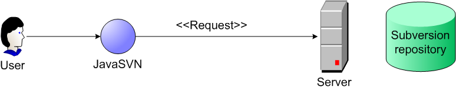
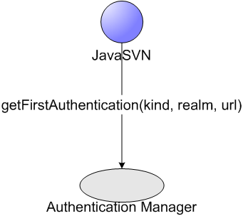
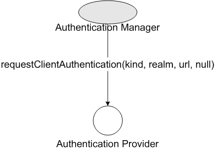
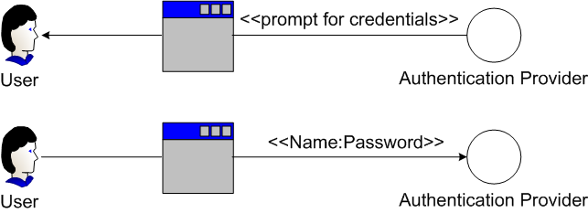
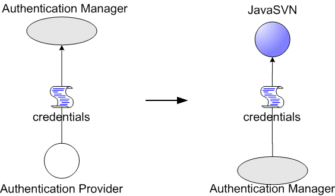
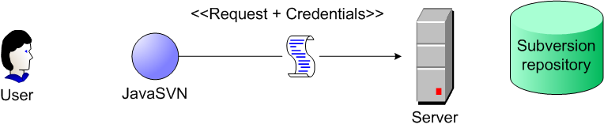
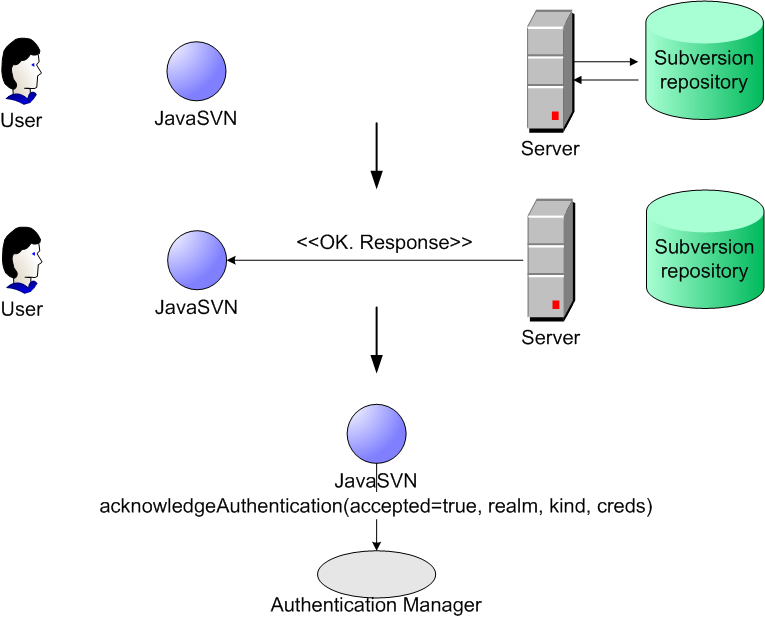
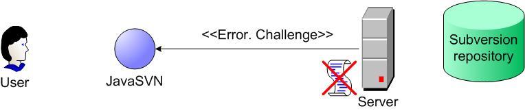

Authentication manager
When an anonymous access to a repository is not permitted, a server asks for authentication credentials. For these purposes JavaSVN uses authentication managers. Such managers implement the ISVNAuthenticationManager interface. The article Getting Started With JavaSVN describes how to create an SVNRepository driver for working with a repository. After such a driver has been instantiated you provide an authentication manager in the following way:
try {
...
ISVNAuthenticationManager authManager;
...
SVNURL url = SVNURL.parseURIDecoded("svn://host/path_to_repository_root/inner_path");
SVNRepository repository = SVNRepositoryFactory.create(url, null);
//set an auth manager which will provide user credentials
repository.setAuthenticationManager(basicAuthManager);
...
} catch (SVNException e) {
//handle exception
}
If you don't provide an authentication manager and a server does not reject anonymous requests (for example, a server can be world-readable, and you are performing a checkout) everything should go well. But if it's not so and the server challenges you for credentials, you will certainly get an exception since there's no authentication manager provided.
Authentication manager usage
The whole authentication manager is based on the following four logical blocks:

On the diagram each logical block is followed by a corresponding interface (in a bold font) provided within the auth package. These blokcs are like pinions of a gear, in our case - of an authentication gear that is used within JavaSVN. Such a structure allows you to replace different blocks while the authentication manager itself remaining the same. Let's look at those blocks closer.
Authentication Provider
This block is represented by the ISVNAuthenticationProvider interface in JavaSVN authentication API. It's responsible for providing user authentication credentials of different kinds. Such providers are passed to an authentication manager. Let's look at how JavaSVN acts when it receives a server challenge for authentication.
Imagine that a client is performing a commit request. The first phase - JavaSVN sends the request to the server:

The server answers with a challenge for authentication:
At this moment JavaSVN asks the authentication manager provided by the client for the first credentials. Here we assume that this is the first time credentials are requested, and since there can be probably more than one credentials for the same authentication realm, JavaSVN starts with the first credentials:

The authentication manager in turn invokes the authentication provider asking for the first credentials:

In the previous diagram the last null parameter says that we are fetching the first credentials and do not have any previous ones. Surely, this diagram is a bit relative: authentication manager is also a part of JavaSVN, but is shown outside the JavaSVN bubble only for more clear demonstration. Method signatures are also demonstrative only and do not exactly match real methods (although they are quite similar).
An authentication provider may be implemented to prompt a user for credentials, for example, when the user tries to authorize himself with name:password credentials (credentials types are discussed later):

So, our authentication provider returns the credentials up to the manager, and the manager returns them up to the JavaSVN:

After this JavaSVN sends the credentials to the server:

At this point the server may accept the client's credentials if they are valid, and satisfy the request. JavaSVN receives a successful response and marks the current credentials as acknowledged by the server:

But imagine, that the user misprinted his password, and the server rejects wrong credentials:
